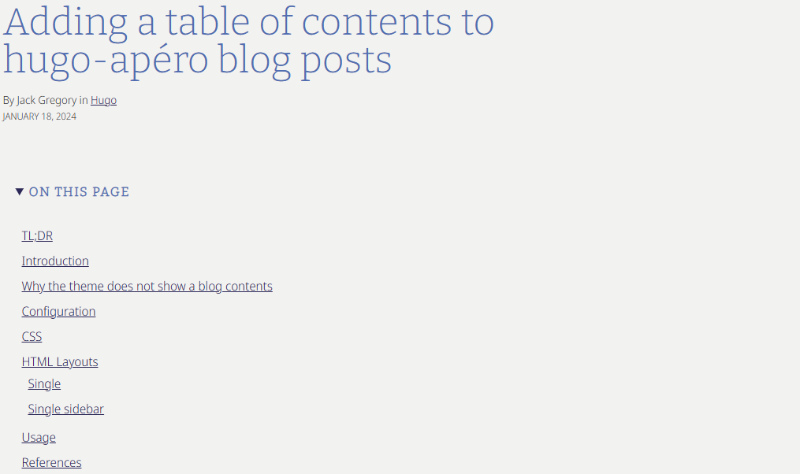
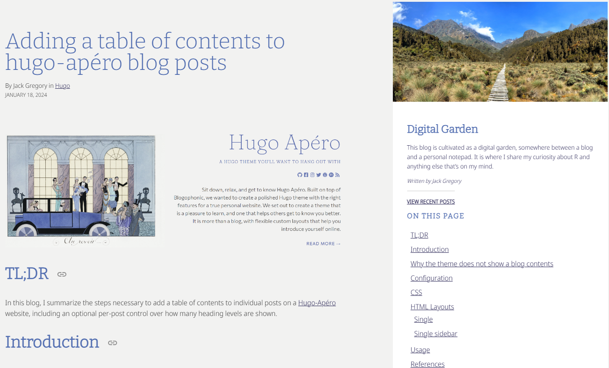

Adding a table of contents to hugo-apéro blog posts
By Jack Gregory in Web Development
January 18, 2024

TL;DR
In this blog, I summarize the steps necessary to add a table of contents to individual posts on a Hugo-Apéro website, including an optional per-post control over how many heading levels are shown.
Introduction
Hugo-Apéro doesn’t ship with a toc: true front-matter switch for ordinary blog posts. The theme’s “On this page” table of contents only renders automatically for posts that belong to a series/collection (
hugo-apero/hugo-apero#106) — a standalone post never gets one, no matter how many headings it has.
In this blog, I’ll outline the four steps necessary to add table of contents support to your own Hugo-Apéro website:
- Why the theme does not show a blog contents;
- Tell Hugo to generate deeper ToC entries;
- Add CSS to control how many levels display; and,
- Patch the post layouts to render the ToC.
Why the theme does not show a blog contents
Hugo’s Goldmark markdown engine automatically builds a table of contents from a page’s headings and stores it in .TableOfContents. Apéro’s own series-sidebar.html and section-sidebar.html partials already contain the logic to display it — but that logic never gets reached for a plain post, because the post’s own template (layouts/_default/single.html, or layouts/blog/single-sidebar.html if you use the two-column layout) never calls it.
That means fixing this is a template job, not a config toggle: we need to add the missing ToC block directly into the post layouts, and wire it up to a toc: true front-matter flag so it’s opt-in per post.
Configuration
By default, Hugo’s ToC generator only picks up <h2> headings — anything deeper is silently dropped. We need to make headings down to <h6> available, so a per-post depth setting has something to work with:
- Markup parameters: add the following code to your site config.
[markup]
[markup.tableOfContents]
startLevel = 2
endLevel = 6
ordered = false
This doesn’t change what’s displayed by default. Instead, it makes the deeper levels available for the CSS in the next step to reveal when asked.
CSS
With a toc_depth front-matter option in mind, I wanted a way to trim the rendered ToC down to a chosen depth without touching the Go template logic each time. The simplest approach is a small CSS rule keyed off a data-toc-depth attribute:
- css navigation parameters: add the following code to
assets/custom.scss(orcustom.css).
/* ToC depth control - default (depth 2) shows h2 + h3 only */
nav[data-toc-depth="1"] ul ul { display: none; }
nav[data-toc-depth="2"] ul ul ul { display: none; }
nav[data-toc-depth="3"] ul ul ul ul { display: none; }
nav[data-toc-depth="4"] ul ul ul ul ul { display: none; }
Each rule simply hides nested <ul> levels beyond the chosen depth, so the full ToC is always generated but only partially shown.
HTML Layouts
Both post layouts need the same addition: a block that checks whether the post has headings and toc: true set, and if so prints .TableOfContents wrapped in a <nav> carrying the data-toc-depth attribute.
Single
This is the one-column layout located in layouts/_default/single.html.
- ToC code block: In
layouts/_default/single.html, add the following block of code between the post header and post body.
...
{{ $headers := findRE "<h[2-6].*>" .Content }}
{{ $has_headers := ge (len $headers) 1 }}
{{ if and $has_headers .Params.toc }}
{{ $tocDepth := .Params.toc_depth | default 2 }}
<details open id="PageTableOfContents" class="mv4">
<summary><h2 class="mv0 f5 fw7 ttu tracked dib">{{ .Params.sidebar.text_contents_label | default "On this page" }}</h2></summary>
<div class="pl2 pr0 mh0">
<nav data-toc-depth="{{ $tocDepth }}">
{{ .TableOfContents }}
</nav>
</div>
</details>
{{ end }}
...
{{ define "main" }}
<main class="page-main pa4" role="main">
<section class="page-content mw7 center">
<article class="post-content pa0 ph4-l">
<header class="post-header">
<h1 class="f1 lh-solid measure-narrow mb3 fw4">{{ .Title }}</h1>
{{ if .Params.subtitle }}<h4 class="f4 mt0 mb4 lh-title measure">{{ .Params.subtitle }}</h4>{{ end }}
{{ if .Params.show_author_byline }}<p class="f6 measure lh-copy mv1">{{ if .Params.author }}By {{ .Params.author }}{{ end }}{{ with .Params.categories }} in{{ range . }} <a href="{{ "categories/" | absURL }}{{ . | urlize }}">{{ . }}</a> {{ end }}{{ end }}</p>{{ end }}
{{ if .Params.show_post_date }}<p class="f7 db mv0 ttu">{{ .PublishDate.Format "January 2, 2006" }}</p>{{ end }}
{{ if .Params.links }}
<div class="ph0 pt5">
{{ partial "shared/btn-links.html" . }}
</div>
{{ end }}
</header>
{{ $headers := findRE "<h[2-6].*>" .Content }}
{{ $has_headers := ge (len $headers) 1 }}
{{ if and $has_headers .Params.toc }}
{{ $tocDepth := .Params.toc_depth | default 2 }}
<details open id="PageTableOfContents" class="mv4">
<summary><h2 class="mv0 f5 fw7 ttu tracked dib">{{ .Params.sidebar.text_contents_label | default "On this page" }}</h2></summary>
<div class="pl2 pr0 mh0">
<nav data-toc-depth="{{ $tocDepth }}">
{{ .TableOfContents }}
</nav>
</div>
</details>
{{ end }}
<section class="post-body pt5 pb4">
{{ .Content }}
{{ .Scratch.Set "details" "closed" }}
{{ partial "shared/post-details.html" . }}
</section>
<footer class="post-footer">
{{ partial "shared/post-pagination.html" . }}
</footer>
</article>
{{ if .Params.show_comments }}
{{ partial "shared/comments.html" . }}
{{ end }}
</section>
</main>
{{ end }}

Single sidebar
This is the two-column layout located in layouts/blog/single-sidebar.html.
- ToC code block: Similar to above, in
layouts/blog/single-sidebar.html, add the following block of code with<aside>alongside the existing sidebar content.
...
{{ $headers := findRE "<h[2-6].*>" .Content }}
{{ $has_headers := ge (len $headers) 1 }}
{{ if and $has_headers .Params.toc }}
{{ $tocDepth := .Params.toc_depth | default 2 }}
<details open id="PageTableOfContents" class="mv4">
<summary><h2 class="mv0 f5 fw7 ttu tracked dib">{{ .Params.sidebar.text_contents_label | default "On this page" }}</h2></summary>
<div class="pl2 pr0 mh0">
<nav data-toc-depth="{{ $tocDepth }}">
{{ .TableOfContents }}
</nav>
</div>
</details>
{{ end }}
...
{{ define "main" }}
<main class="page-main pa4" role="main">
<section class="page-content mw7 center">
<article class="post-content pa0 pr3-l">
<header class="post-header">
<h1 class="f1 lh-solid measure-narrow mb3 fw4">{{ .Title }}</h1>
{{ if .Params.subtitle }}<h4 class="f4 mt0 mb4 lh-title measure">{{ .Params.subtitle }}</h4>{{ end }}
{{ if .Params.show_author_byline }}<p class="f6 measure lh-copy mv1">{{ if .Params.author }}By {{ .Params.author }}{{ end }}{{ with .Params.categories }} in{{ range . }} <a href="{{ "categories/" | absURL }}{{ . | urlize }}">{{ . }}</a> {{ end }}{{ end }}</p>{{ end }}
{{ if .Params.show_post_date }}<p class="f7 db mv0 ttu">{{ .PublishDate.Format "January 2, 2006" }}</p>{{ end }}
</header>
<section class="post-body pt5 pb4">
{{ .Content }}
</section>
<footer class="post-footer">
{{ partial "shared/post-pagination.html" . }}
</footer>
</article>
{{ if .Params.show_comments }}
{{ partial "shared/comments.html" . }}
{{ end }}
</section>
</main>
<aside class="page-sidebar" role="complementary">
{{ partial "shared/sidebar-scaffold.html" . }}
{{ $headers := findRE "<h[2-6].*>" .Content }}
{{ $has_headers := ge (len $headers) 1 }}
{{ if and $has_headers .Params.toc }}
{{ $tocDepth := .Params.toc_depth | default 2 }}
<div class="ph4 pb4">
<h2 class="mv3 f5 fw7 ttu tracked">{{ .Params.sidebar.text_contents_label | default "On this page" }}</h2>
<nav id="PageTableOfContents" aria-label="PageTableOfContents" data-toc-depth="{{ $tocDepth }}">
{{ .TableOfContents }}
</nav>
</div>
{{ end }}
{{ .Scratch.Set "details" "open" }}
{{ partial "shared/post-details.html" . }}
</aside>
{{ end }}

Both patches reuse the id="PageTableOfContents" that Apéro’s own custom.scss already styles for series pages, so the box picks up sensible spacing and typography without any extra CSS.
Usage
With the config, CSS, and layouts all in place, turning on a table of contents for any post is just two front-matter fields:
toc: true
toc_depth: 2 # 1 = h2 only, 2 = h2+h3, 3 = h2+h3+h4, 4 = h2+h3+h4+h5
Leaving toc_depth out defaults to 2, which matches Hugo’s own out-of-the-box behaviour, so any post with just toc: true and no depth setting looks exactly as if the theme supported this natively.
References
I found the following references helpful in adding this table of contents feature as well as preparing this blog:
- How to show the table of content in the sidebar, an open documentation issue on the hugo-apero repository.
- Display “On this page” for non-series pages, the specific open issue describing this limitation.
-
Hugo’s Table of Contents documentation for the underlying
.TableOfContentsandmarkup.tableOfContentsconfig behaviour.